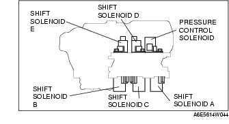
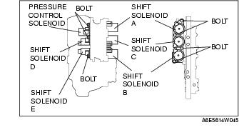

Solenoid valve removal/installation [FN4A-EL]
1. Disconnect the negative battery cable.
2. Remove the control valve body. (See CONTROL VALVE BODY REMOVAL [FN4A-EL].)
3. Remove the solenoid valve(s).

4. Apply ATF to a new O-ring and install it on the solenoid valve.
5. Install the solenoid valve in the control valve body.

Tightening torque
6. Install the control valve body. (See CONTROL VALVE BODY REMOVAL [FN4A-EL].)
7. Connect the negative battery cable.
8. Add ATF and, with the engine idling, inspect the ATF level and inspect for leakage. (See Automatic Transaxle Fluid (ATF) Level Inspection.)
9. Carry out the mechanical system test. (See MECHANICAL SYSTEM TEST [FN4A-EL].)
10. Carry out the road test. (See ROAD TEST [FN4A-EL].)